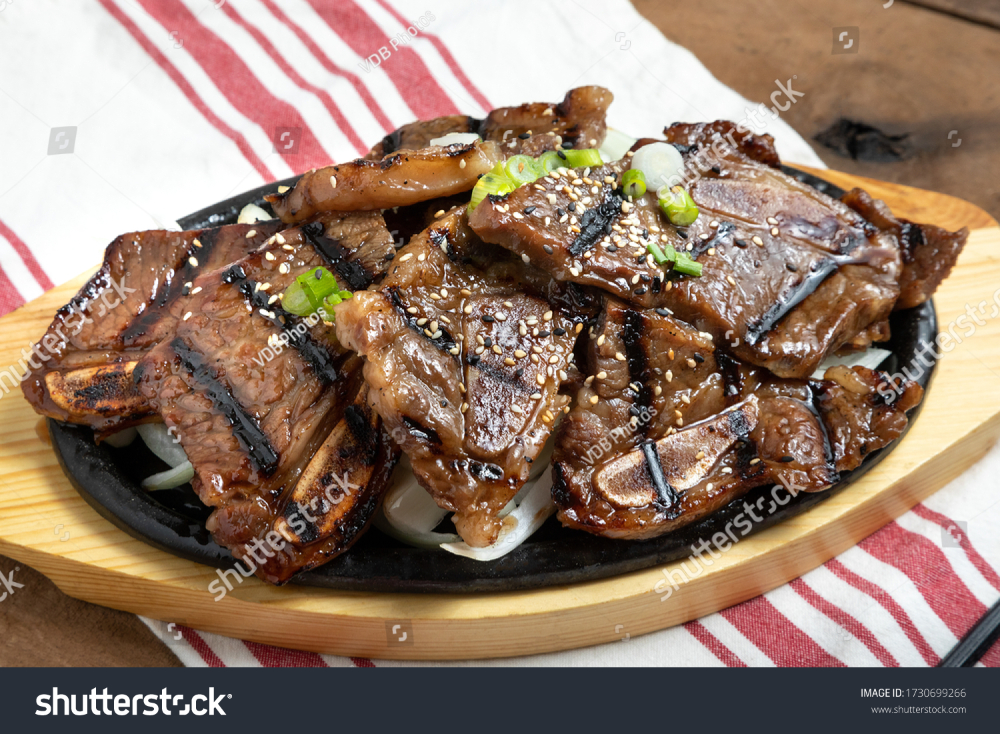

Galbi

Ingredients
Will result in around 4 to 6 servings
- Short ribs: 3 pounds, cut flanken style
- Soy sauce: 1/3 cup
- Brown sugar: 1/3 cup
- Rice wine: 1/3 cup
- Sesame oil: 1 tablespoon
- Black pepper: 2 teaspoons
- Korean Gochujang: 1/4 teaspoon
- Onion: 1, peeled and quartered
- Garlic cloves: 8, peeled
- Asian pear: 1, peeled, cored, quartered
- Ginger: 1 one-inch chunk, peeled
- Sesame seeds: 2 teaspoons
- Lettuce Leaves
- Red or green hot pepper, optional
- Rice
Steps
- Rinse short ribs in cold water, pat dry and place in a
wide shallow bowl. In another bowl, mix together soy sauce,
brown sugar, rice wine, sesame oil, black pepper and cayenne.
- Put onion, garlic, pear and ginger in the work bowl of a food
processor. Grind ingredients to a smooth purée, then add to soy
sauce mixture. Add sesame seeds. Thin with ¼ cup water. Pour
marinade over short ribs and mix well. Cover and refrigerate
for at least 2 hours, or overnight. Bring to room temperature,
drain and discard marinade.
- Cook short ribs on a hot grill or under the broiler for 2 to
3 minutes per side, until nicely browned but juicy. Pile grilled
meat on a platter and serve immediately with lettuce leaves on
the side. Accompany with sliced hot peppers, ssamjang and steamed
rice, if desired.